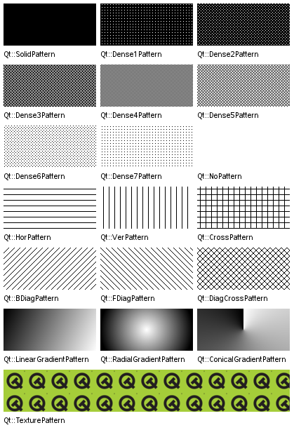

| Home · All Classes · Main Classes · Grouped Classes · Modules · Functions |
The QBrush class defines the fill pattern of shapes drawn by a QPainter. More...
#include <QBrush>
The QBrush class defines the fill pattern of shapes drawn by a QPainter.
A brush has a style and a color. One of the brush styles is a custom pattern, which is defined by a QPixmap.
The brush style defines the fill pattern. The default brush style is Qt::NoBrush (depending on how you construct a brush). This style tells the painter to not fill shapes. The standard style for filling is Qt::SolidPattern.
The brush color defines the color of the fill pattern. The QColor documentation lists the predefined colors.
Use the QPen class for specifying line/outline styles.
Example:
QPainter painter;
QBrush brush(Qt::yellow); // yellow solid pattern
painter.begin(&anyPaintDevice); // paint something
painter.setBrush(brush); // set the yellow brush
painter.setPen(Qt::NoPen); // do not draw outline
painter.drawRect(40,30, 200,100); // draw filled rectangle
painter.setBrush(Qt::NoBrush); // do not fill
painter.setPen(Qt::black); // set black pen, 0 pixel width
painter.drawRect(10,10, 30,20); // draw rectangle outline
painter.end(); // painting done
See the Qt::BrushStyle for a complete list of brush styles.

See also QPainter, QPainter::setBrush(), and QPainter::setBrushOrigin().
Constructs a default black brush with the style Qt::NoBrush (this brush will not fill shapes).
Constructs a black brush with the style style.
See also setStyle().
Constructs a brush with the color color and the style style.
See also setColor() and setStyle().
Constructs a brush with the color color and a custom pattern stored in pixmap.
The color will only have an effect for QBitmaps.
See also setColor() and setPixmap().
Constructs a brush with a black color and a pixmap set to pixmap.
Constructs a copy of other.
Constructs a brush based on the given gradient.
Constructs a brush with the color color and the style style.
See also setColor() and setStyle().
Constructs a brush with the color color and a custom pattern stored in pixmap.
The color will only have an effect for QBitmaps.
See also setColor() and setPixmap().
Destroys the brush.
Returns the brush color.
See also setColor().
Returns the gradient describing this brush.
Returns true if the brush is fully opaque otherwise false. A brush is considered opaque if:
Sets the brush color to c.
See also color() and setStyle().
This is an overloaded member function, provided for convenience. It behaves essentially like the above function.
Sets the brush style to style.
See also style().
Sets the brush pixmap to pixmap. The style is set to Qt::TexturePattern.
The current brush color will only have an effect for monochrome pixmaps, i.e. for QPixmap::depth() == 1.
See also texture(), pixmap(), and color().
Returns the brush style.
See also setStyle().
Returns the custom brush pattern, or a null pixmap if no custom brush pattern has been set.
See also setTexture() and setPixmap().
Returns the brush as a QVariant
Returns true if the brush is different from b; otherwise returns false.
Two brushes are different if they have different styles, colors or pixmaps.
See also operator==().
Assigns b to this brush and returns a reference to this brush.
Returns true if the brush is equal to b; otherwise returns false.
Two brushes are equal if they have equal styles, colors and pixmaps.
See also operator!=().
This is an overloaded member function, provided for convenience. It behaves essentially like the above function.
Writes the brush b to the stream s and returns a reference to the stream.
See also Format of the QDataStream operators.
This is an overloaded member function, provided for convenience. It behaves essentially like the above function.
Reads the brush b from the stream s and returns a reference to the stream.
See also Format of the QDataStream operators.
| Copyright © 2005 Trolltech | Trademarks | Qt 4.1.0 |